Dragon Ball dentro do Minecraft Bedrock. Feito por fãs, em evolução de verdade.
O Dragon Universe é um add-on gratuito, feito por fãs, com 7 raças, transformações, ataques de ki, 47 missões principais e viagem entre planetas. Criado pela equipe Dragon Universe, com nome e identidade próprios.
Versão 1.7.1E em teste da equipe. Funciona em PC e celular. Ainda não existe versão pública.
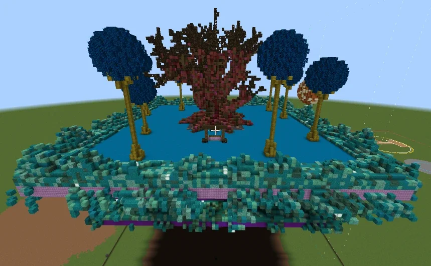
O que é o Dragon Universe
O Dragon Universe é um add-on de fãs para Minecraft Bedrock. Foi criado pela equipe Dragon Universe, com nome e identidade próprios, e é inspirado no Dragon Evolution, de About04.
A versão atual é a 1.7.1E, em teste da equipe. Ainda não há versão pública estável. Por enquanto, funciona em PC e celular. O add-on é gratuito. No jogo, os idiomas são português, inglês e espanhol. O site é só em português.
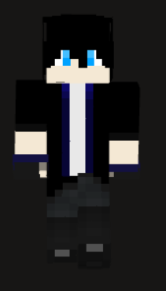
João (@jvbs)
E aí! Eu sou o João (@jvbs). Aqui você vê o que o jogo já tem hoje.
O que já está no jogo
Tudo aqui existe na versão de teste 1.7.1E. O que ainda está a caminho fica nas seções “Em desenvolvimento” e “Roadmap”.
- 7raças, cada uma com bônus e transformações próprios
- 47missões principais, da Saga dos Saiyajins à Saga do Futuro Trunks
- 100+personagens e inimigos
- 200+itens
- 140+roupas e armaduras
- Já no jogo
Raças
7 raças, cada uma com seus bônus e transformações.
- Terráqueo
- Saiyajin
- Namekuseijin
- Raça do Freeza
- Majin
- Bio-Android
- Demônio
- Já no jogo
Transformações
Do Super Saiyajin ao Ultra Ego.
Linha Saiyajin: SSJ ao SSJ4, God, Blue / Rosé, Evolution e Legendary.
Raça do Freeza: formas até a Golden e a Black.
Formas globais: Ultimate Form, Beast e Ultra Ego.
- Já no jogo
Ataques de ki
Kamehameha, Galick Gun, Final Flash, Makankosappo, Genki Dama, Kienzan e disparos de ki.
- Já no jogo
Técnicas e fusões
Técnicas: Kaioken, Ultra Instinct, Hakai e mais.
Fusões: Dança Metamoru, Potara e Fusão Namekuseijin.
- Já no jogo
Voo e combate
Voo com 10 níveis. O combate usa Vida, Ki e Stamina, com guarda, esquiva e combos.
- Já no jogo
Progressão e treino
Evolua por níveis e atributos. Treine com sparring de sombra, concentração, pesos, Máquina de Gravidade e Câmara do Tempo. Mestres ensinam técnicas.
- Já no jogo
História
47 missões principais, da Saga dos Saiyajins à Saga do Futuro Trunks (Goku Black e Zamasu). Também há missões secundárias, desafios e conquistas.
- Já no jogo
Planetas e dimensões
Viaje de nave entre: Terra, Namekusei, Planeta Vegeta, Planeta Freeza e Yardrat · Inferno, planeta do Kaioshin Supremo e Outro Mundo · Câmara do Tempo e linha do tempo do Futuro Trunks · arena do Universo 6 e Espaço.
- Já no jogo
Esferas do Dragão
Shenron e Porunga, com 3 desejos cada.
- Já no jogo
Multiplayer
Grupos, terrenos protegidos, zeni (a moeda do jogo) e lojas.
Galeria
Imagens reais das construções da equipe. Cada legenda diz o que ainda está em desenvolvimento.
Todas estas imagens são prévias de construções novas que ainda não estão no add-on.
Clique em uma imagem para ampliar. Use Esc para fechar.
Em desenvolvimento · Prévia Planeta do Bills. 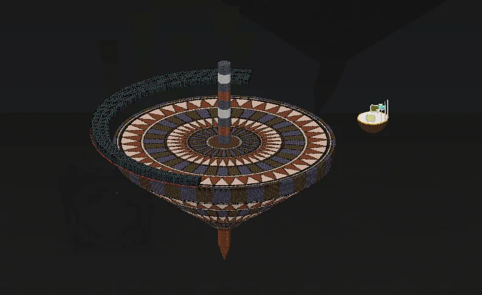
Em desenvolvimento · Prévia Arena do Torneio do Poder. 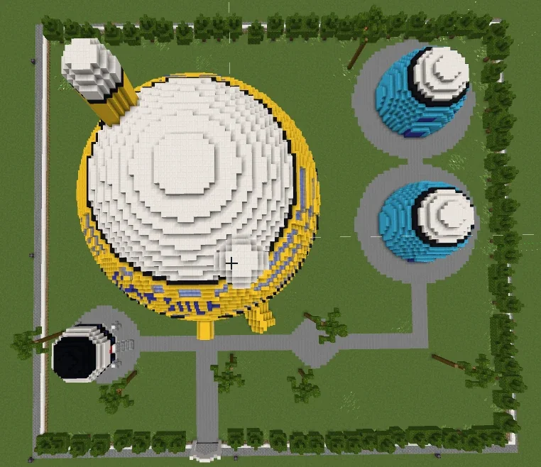
Em desenvolvimento · Prévia Corporação Cápsula, vista de cima. 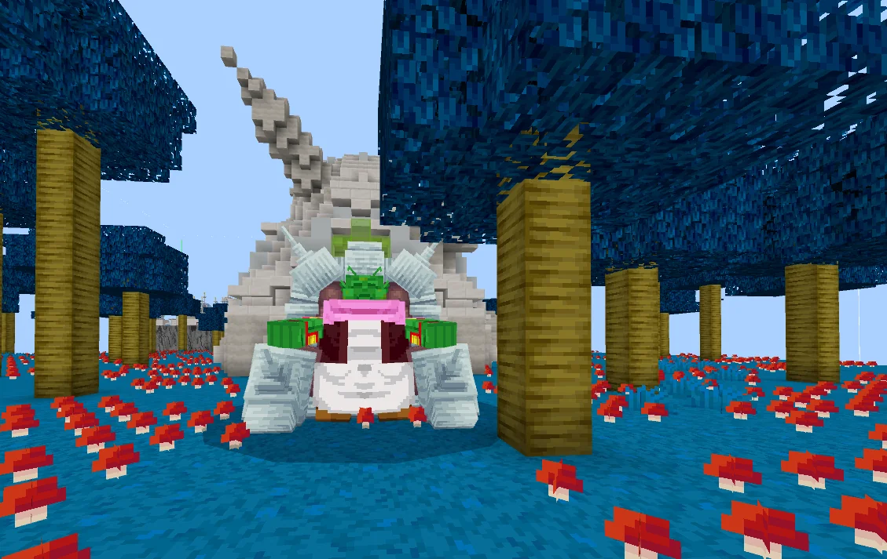
Em desenvolvimento · Prévia Casa do Guru, em Namekusei, por fora. 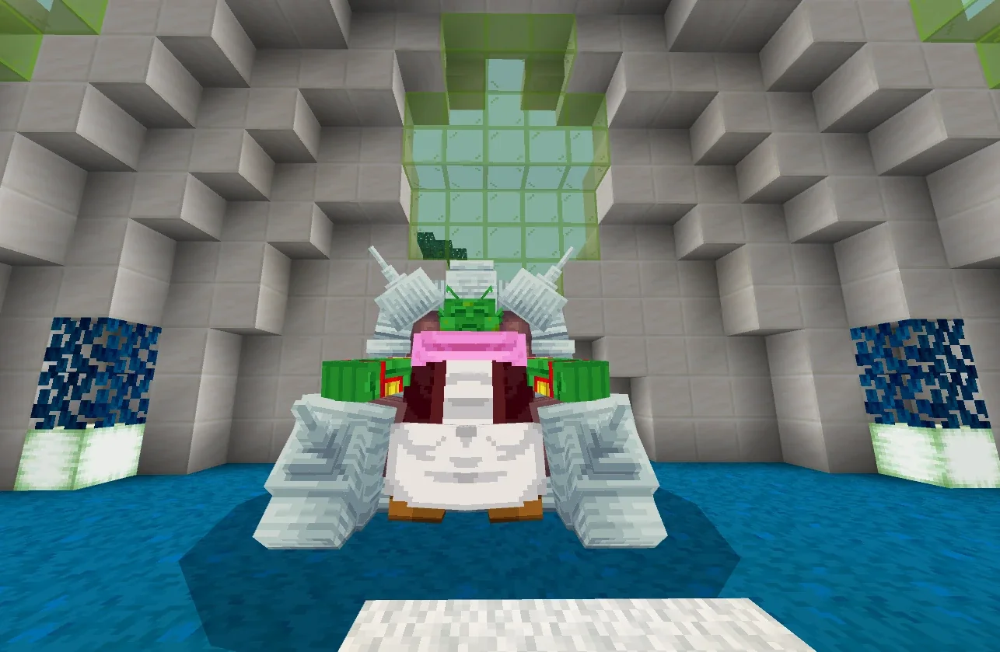
Em desenvolvimento · Prévia Casa do Guru, em Namekusei, por dentro. 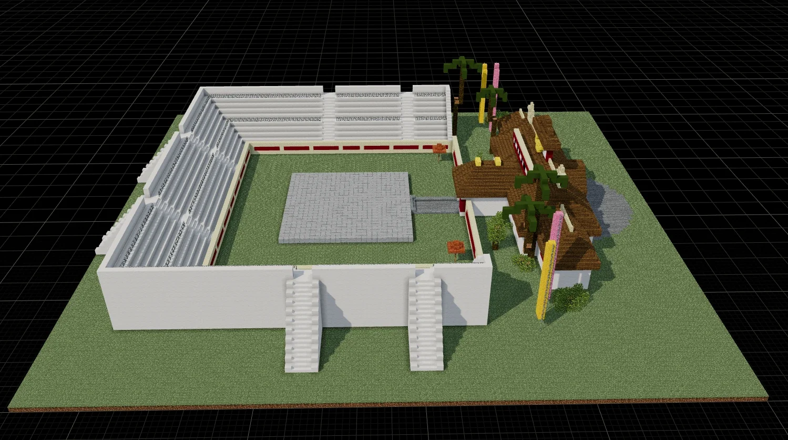
Em desenvolvimento · Prévia Arena do Torneio de Artes Marciais. 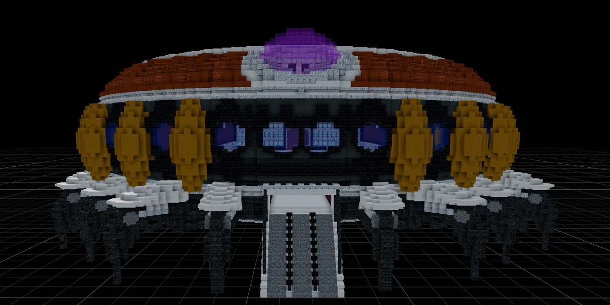
Em desenvolvimento · Prévia Nave do Freeza, vista de frente. 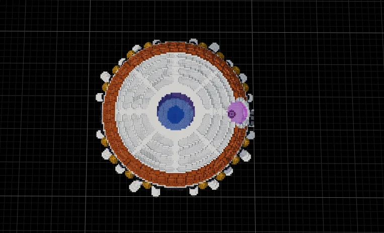
Em desenvolvimento · Prévia Nave do Freeza, vista de cima. 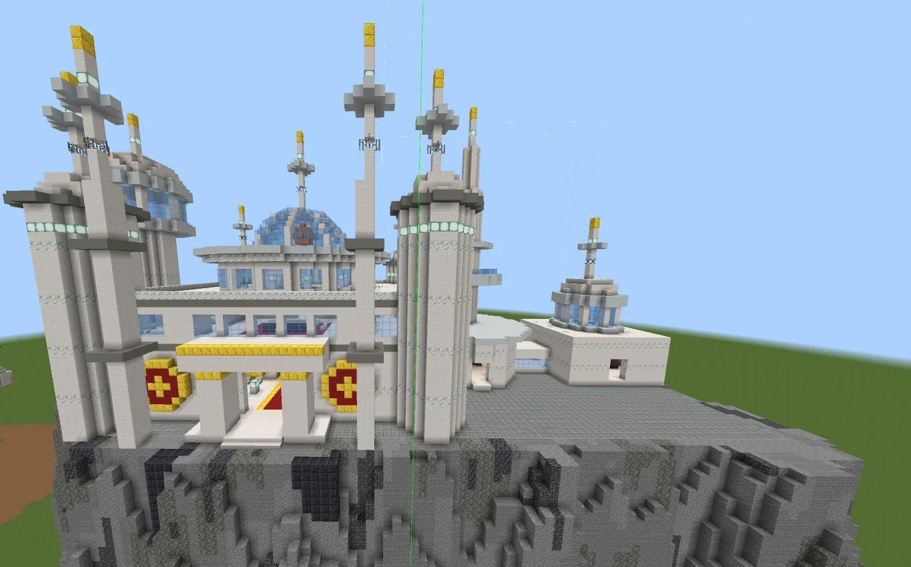
Em desenvolvimento · Prévia Castelo do Rei Vegeta. 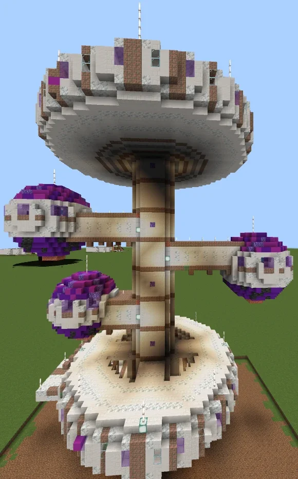
Em desenvolvimento · Prévia Prisão Galáctica. 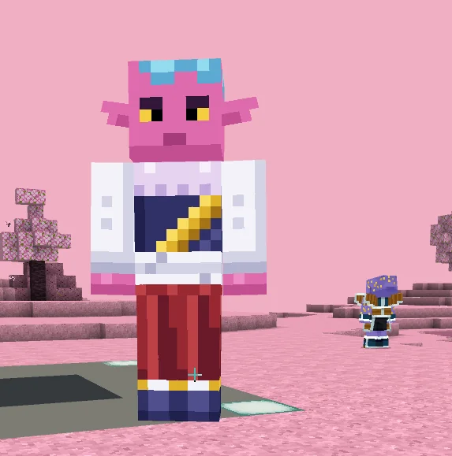
Em desenvolvimento · Prévia NPCs novos no planeta rosa. Nomes definitivos depois. 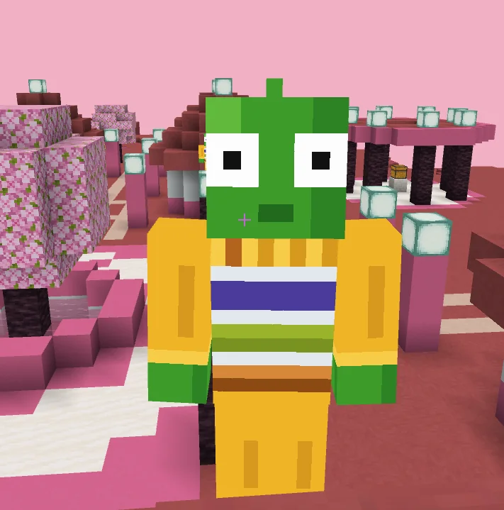
Em desenvolvimento · Prévia NPCs novos no planeta rosa. Nomes definitivos depois. 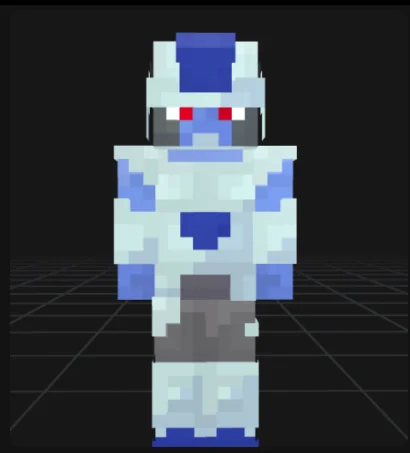
Em desenvolvimento · Prévia NPC novo de armadura azul-clara e olhos vermelhos. Nome definitivo depois.


Novidades até a versão 1.7.1E
O projeto está andando. Isto já foi feito e está na versão de teste.
Nova identidade
- Novo nome e novo logo azul. Nasce o Dragon Universe.
Mundo
- Estruturas únicas por mundo: uma Casa do Kame, uma Casa do Goku, uma arena dos Jogos de Cell e uma nave do Babidi.
- Cidades: até 3 Cidades do Oeste e 5 cidades.
- Planetas sem mobs comuns do Minecraft. Nos planetas não nascem mobs regulares do jogo.
Combate, voo e som
- Voo mais suave, com animação melhorada.
- Som da Genki Dama adicionado.
- Sons do Final Flash e barra de ki corrigidos.
História e viagem
- A Saga do Freeza agora encontra Namekusei.
- Missões da Saga do Futuro Trunks consertadas.
- A viagem entre planetas volta para o lugar certo.
Novos blocos e receitas
- Laje de azulejo vermelho, musgo medicinal plantável e faixa de cabeça.
Da versão do Ricardo (1.7.1E)
- Aldeões dos planetas redesenhados: Saiyajins (agora com cauda), Freeza, Yardrat e Inferno, com modelos e texturas novos.
- Kaioken reequilibrado: menos perda de vida e um nível máximo mais justo.
- Soldados do Freeza com nível e força consistentes.
- Casa do Goku e planeta do Senhor Kaioh refeitos.
- Nova textura do Potencial Desbloqueado Namekuseijin.
- Ajustes nas recompensas (Korin, roupa da Bulma).
Em desenvolvimento
Construções novas do Ricardo que ainda não estão integradas ao add-on. São prévias.
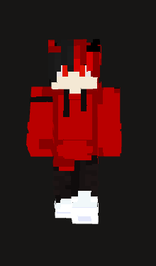
Ricardo (@rvmm)
Aqui é o Ricardo (@rvmm). Estas construções são minhas e ainda estão a caminho. Nenhuma delas está no add-on por enquanto.
-
Planeta do Bills
Em desenvolvimento · PréviaEm desenvolvimento. Ainda não está no add-on.
-
Torneio do Poder
Em desenvolvimento · PréviaEm desenvolvimento. Ainda não está no add-on.
-
Corporação Cápsula
Em desenvolvimento · PréviaEm desenvolvimento. Ainda não está no add-on.
-
Casa do Guru, em Namekusei
Em desenvolvimento · PréviaEm desenvolvimento. Ainda não está no add-on.
-
Torneio de Artes Marciais
Em desenvolvimento · PréviaEm desenvolvimento. Ainda não está no add-on.
-
Nave do Freeza
Em desenvolvimento · PréviaEm desenvolvimento. Ainda não está no add-on.
-
Castelo do Rei Vegeta e Prisão Galáctica
Em desenvolvimento · PréviaEm desenvolvimento. Ainda não estão no add-on.
E outras construções
Em desenvolvimento · PréviaHá mais prévias na galeria, incluindo os NPCs novos.
Estas imagens mostram o que a equipe está construindo. Elas não estão no add-on hoje e não têm data de chegada.
O que vem pela frente
Estes itens estão planejados. Não têm data e não são promessa de entrega.
- Planejado
Estabilidade
- Proteção do progresso salvo
- Esferas do Dragão e desejos corrigidos
- Voo reformulado (sem peso nem tremedeira, com carga de ki enquanto voa)
- Planejado
Novos treinos
- Treino físico com flexões
- Treino mental contra réplicas de chefes
- Nova tela de concentração
- Planejado
Raças e formas
- Namekuseijin Full Power
- Cell Max
- Cerealianos
- Tsufurujins
- Habilidades no estilo do Moro
- Passivas raciais
- Planejado
Lugares
- Planeta do Bills
- Torneio do Poder
- Planeta Cereal
- Planeta do Kaioshin Supremo e Universo 6 completos
- A história continuando depois da Saga do Futuro Trunks
- Planejado
Eventos dinâmicos
- Invasões do Exército do Freeza, com um Freeza Negro raro
- Planejado
Mundo vivo
- Títulos e facções
- NPCs úteis
- Novos conjuntos de Esferas do Dragão (Super, Daima e Cereal)
O roadmap muda conforme o projeto evolui. Quer acompanhar de perto? Fique de olho no Discord.
Entrar no DiscordComo instalar
Versão de testeVersão de teste. A 1.7.1E ainda está em teste da equipe. Faça backup do seu mundo antes de qualquer coisa.
Requisitos
- Minecraft Bedrock 26.52
- Experimento Beta APIs ativado no mundo onde você vai jogar
- Funciona em PC e celular por enquanto
Download
Download: Em breve.
O add-on é gratuito. Ainda não existe versão pública. Quando houver, o botão será ativado aqui e o aviso sai no Discord.
Apoie o projeto
Em breveO Dragon Universe é gratuito. Haverá planos opcionais para quem quiser apoiar o desenvolvimento, e eles estão Em breve. Ainda não há planos abertos, valores nem forma de pagamento. Nenhuma cobrança está aberta.
Quer ser avisado quando houver novidade? Entre na comunidade.
Planos de apoio
Em breveSem valores definidos.
Ricardo (@rvmm)
Quando tivermos novidades sobre como ajudar, a gente avisa no Discord.
Quem faz o Dragon Universe
Um projeto de fãs, feito por pessoas de verdade.
João Vitor
Discord @jvbs
Equipe Dragon Universe.
Ricardo Vinicius
Discord @rvmm
Equipe Dragon Universe. Responsável pelas construções novas.
Luan Dias
Discord @luan_dias
Desenvolvedor da equipe Dragon Universe.
Inspirado no Dragon Evolution, de About04.
O Dragon Universe é um projeto de fãs com nome e identidade próprios, inspirado no trabalho de About04.
Perguntas frequentes
O Dragon Universe é o Dragon Evolution?
Não. O Dragon Universe é um add-on de fãs criado pela equipe Dragon Universe, com nome e identidade próprios. Ele é inspirado no Dragon Evolution, de About04.
Já posso baixar?
Ainda não. A versão 1.7.1E está em teste da equipe e não existe versão pública estável. Quando houver, o botão de download será ativado aqui. O add-on é gratuito.
O que eu preciso para jogar?
Minecraft Bedrock 26.52 com o experimento Beta APIs ativado no mundo. Como é versão de teste, faça backup do seu mundo.
Funciona no celular e no PC?
Sim. Por enquanto, o Dragon Universe funciona em PC e celular, com Minecraft Bedrock 26.52 e o experimento Beta APIs ativado. Sobre console, ainda não temos confirmação.
É de graça?
Sim, o add-on é gratuito. Haverá planos opcionais para quem quiser apoiar o projeto. Eles estão Em breve, ainda sem valores, e você não precisa deles para jogar.
Tem tradução?
Sim. No jogo, há português, inglês e espanhol. O site está só em português.
Vai estragar meu mundo?
É uma versão de teste, então pode haver falhas. Faça backup do seu mundo antes de testar.
O que já existe e o que ainda é só prévia?
Marcamos tudo. Já no jogo é o que existe hoje na versão de teste. Em desenvolvimento são prévias de construções que ainda não estão no add-on. Planejado são ideias sem data.
Isso é oficial?
Não. É um projeto de fãs, sem vínculo oficial. Dragon Ball é propriedade de Akira Toriyama, Shueisha e Toei Animation. Minecraft é marca da Mojang/Microsoft.
Quem está por trás do projeto?
João Vitor (@jvbs), Ricardo Vinicius (@rvmm) e Luan Dias (@luan_dias). Veja a seção Equipe e créditos.
Posso apoiar o projeto?
O add-on é gratuito e os planos de apoio serão opcionais. A seção Apoie o projeto está como Em breve: ainda não há planos, valores nem forma de pagamento. Entre no Discord para ser avisado.
O projeto vai continuar?
A equipe Dragon Universe segue desenvolvendo o add-on. As melhorias já feitas estão em “Novidades” e o que vem pela frente está no “Roadmap”. Não prometemos datas.